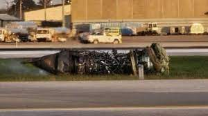

Multiple people are dead and others are injured after a McDonnell Douglas MD-11 operated by UPS Airlines crashed near Louisville Muhammad Ali International Airport (SDF) on Tuesday. Flight data suggests the aircraft, bound for Honolulu, made impact south of the airfield at around 17:13 EST.
Three crew members were on board the aircraft. Several local agencies responded to the situation, as large clouds of black smoke billowed into the sky. The crash triggered a massive explosion, prompting the airport to shut down.
Yesterday evening, the NTSB confirmed in a press conference that, while it has managed to identify the plane's cockpit voice and flight data recorders, they are showing signs of fire damage. However, this is said to be limited, and it hopes to be able to read data from them once they have been prepared at its laboratory. The NTSB is investigating the jet's maintenance history, and plans to hold another briefing later today.
Newly released dashcam video shows the aircraft missing its left engine as it struggles to gain altitude. It subsequently makes impact with the ground and bursts into flames.
Investigation video by Swiss001:

Engine that burned down and detached from UPS Flight 2976. Aircraft that was involved in the crash.
Aircraft that was involved in the crash.
N259UP is a 34-year-old airframe, according to ch-aviation